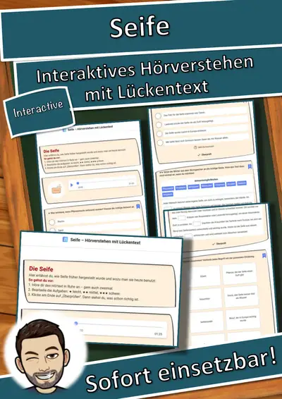
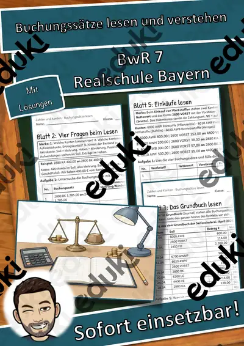

Lesespur: Die Seifensiederei – Lesespurgeschichte mit Rätseln (Klasse 8)
Mit dieser differenzierten Lesespurgeschichte erarbeiten die Lernenden selbstständig und motivierend, wie aus Fett und Lauge Seife hergestellt wird – vom Fettbottich und Laugenfass über Rührbottich, Siedekessel und Salzkufe bis zu Seifenleim, Formkasten, Trockengestell und Stempeltisch. Lena und Jonas erkunden mit der Seifensiederin Frau Seifert eine alte Werkstatt.
So funktioniert die Lesespur: Die Lernenden lesen einen Abschnitt, entnehmen dem Hinweis einen Ort in der Siederei, suchen ihn auf dem farbigen Siederei-Plan und lesen dort weiter. An jeder richtigen Station sammeln sie einen Buchstaben. Vier Sackgassen (Besen, Wassereimer, Öllampe, Werkstattkatze) dienen der Selbstkontrolle und machen deutlich, dass diese Dinge zwar in der Werkstatt stehen, aber kein Arbeitsschritt der Herstellung sind. Am Ende ergeben die gesammelten Buchstaben – nach dem Umstellen – ein geheimes Lösungswort, das die chemische Reaktion benennt, bei der aus Fett und Lauge Seife wird.
Inhaltlich verbindet das Material Chemie mit Alltag und Handwerk: Fette und Laugen als Rohstoffe, die chemische Umwandlung von Fett und Lauge zu Seife, das Abtrennen der Seife durch Aussalzen und die Weiterverarbeitung zum festen Produkt – anschaulich und altersgerecht.
Das ist enthalten:
- Lesespurgeschichte in drei Niveaus (leicht, mittel, schwer) – ideal zur Differenzierung
- farbiger Siederei-Plan mit allen Orten der Werkstatt
- vier eingebettete Aufträge: Begriffe verbinden, Quiz, Rechenaufgabe, Steckbrief
- Hörverstehen mit QR-Code zum Hörtext (Teil A Ankreuzen, Teil B frei schreiben)
- Rätselseite (Wörter-Suchsel und Wissensquiz)
- Ausmalbild
- ausführliches Lösungsblatt mit Fundorten
- das komplette Material zusätzlich als drucksparende Schwarz-Weiß-Vorlage
Geförderte Kompetenzen: sinnentnehmendes und selektives Lesen, Anwenden von Lesestrategien, konzentriertes Zuhören sowie das fachliche Verständnis von Rohstoffen, chemischer Reaktion und Verarbeitungsschritten bei der Seifenherstellung.
Einsatz: Übungsphasen, Wochenplan, Stationenlernen, Vertretungsstunden, Freiarbeit und Nachhilfe. Umfang: 24 Seiten.
Ähnliche Materialien

Lesespur: Die Seife – Lesespurgeschichte mit Rätseln (Klasse 9)

Seife – Hörverstehen mit Lückentext (interaktiv)

Seife Lückentext mit Wortspeicher Hörverstehen und Suchsel

Fett Lückentext mit Wortspeicher Hörverstehen und Suchsel

Buchungssätze lesen und verstehen – Arbeitsheft mit Lösungen (BwR 7, Realschule Bayern)

Lesespur: Der 3D-Druck: In der Technik-Werkstatt – Lesespurgeschichte mit Rätseln (Klasse 9)

Lesespur: Die Physik-Werkstatt – Lesespurgeschichte mit Rätseln (Klasse 7)